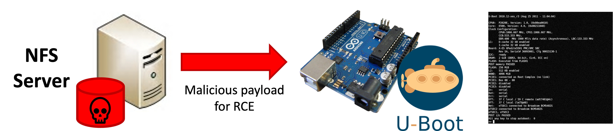
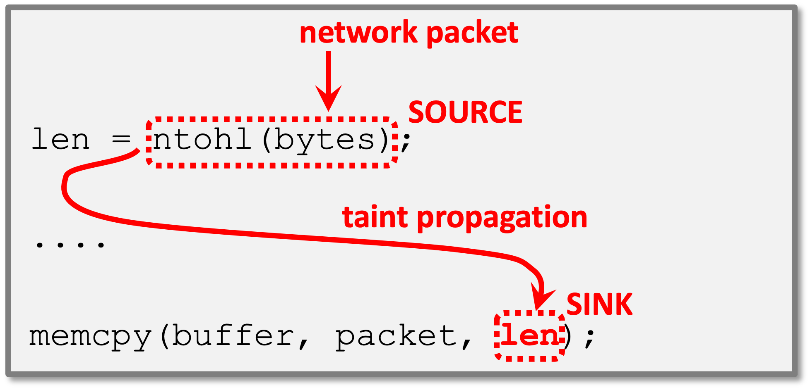
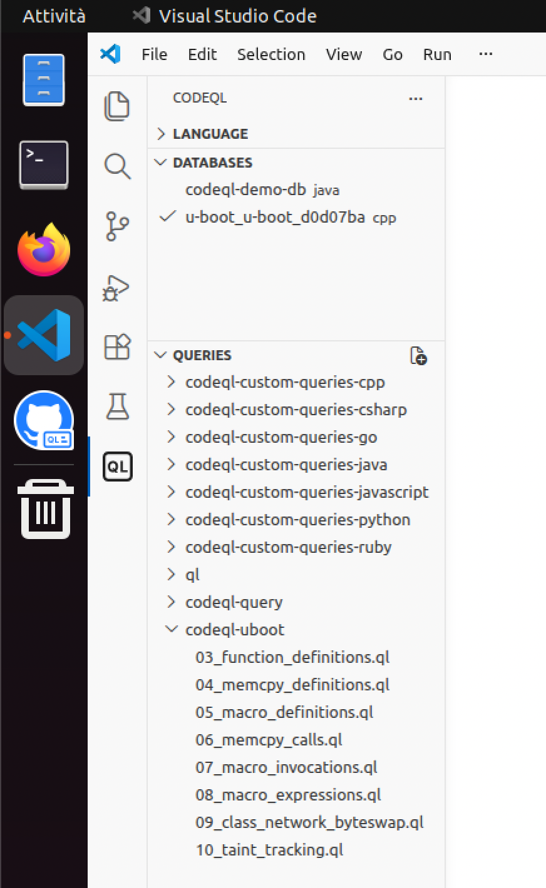

Esercizi su analisi statica
Il seguente esercizio chiede di identificare delle vere vulnerabilità di buffer-overflow nel progetto open-source U-Boot tramite analisi statica con CodeQL.
U-Boot è un boot-loader utilizzato per l'avviamento del sistema operativo in sistemi embeddedd. Le vulnerabilità possono essere attaccate quando U-Boot è configurato per caricare i file di avviamento dalla rete. L'attaccante è in grado di aggirare i controlli sulla validità dei file basati su firma digitale.

Il codice dell'esercizio è disponibile nella macchina virtuale nella cartella swsec-labs/static-analysis/, e nel repository online su https://github.com/swsec-book/swsec-labs. L'esercizio è tratto da una competizione online capture-the-flag organizzata dal GitHub Security Lab (https://securitylab.github.com/ctf/uboot/).
Il codice del progetto U-Boot contiene numerosi punti che:
- leggono dati dalla rete (source della taint propagation);
- passano i dati alla funzione
memcpy()nel parametrosize(sink della taint propagation); - non effettuano alcuna input validation.

L'esercizio richiede di scrivere una query CodeQL per identificare le chiamate non sicure di questo tipo alla funzione memcpy().
Query di esempio
Nella macchina virtuale, avviare Visual Studio Code con l'estensione per CodeQL, utilizzando l'icona nella barra a sinistra di Ubuntu. Poi, posizionarsi nella sezione di Visual Studio Code dedicata a CodeQL, cliccando sul simbolo "QL" in basso nella barra a sinistra di Visual Studio Code.

Per svolgere il primo esercizio, selezionare il database "u-boot" nel menu in alto a sinistra. Poi, aprire il file 03_function_definitions.ql nella sezione "queries" a sinistra.
Inserire nel file il seguente codice. Si raccomanda di non fare copia-incolla, ma di digitarlo manualmente, per familiarizzare con la sintassi e con l'editor.
import cpp
from Function f
where f.getName() = "strlen"
select f, "a function named strlen"
CodeQL fornirà dei suggerimenti tramite auto-completamento:
- Dopo aver digitato
frome le prime lettere diFunction, l'ambiente proporrà una lista di classi dalla libreria di CodeQL. Questo meccanismo permette di scoprire quali classi sono disponibili per rappresentare il codice sorgente. - Dopo aver digitato
where f., l'ambiente proporrà una lista di predicati che possono essere chiamati sulla variabilef. - Digita le prime lettere di
getName()per restringere la lista. - Muovi il cursore sul nome di un predicato per consultarne la documentazione. Questo meccanismo permette di scoprire quali predicati sono disponibili e cosa fanno.
Eseguire la query, cliccando sul nome del file con il tasto destro, e selezionando CodeQL: Run Query.
Analizza i risultati che appaiono nel pannello dei risultati. Clicca sugli hyperlink dei risultati per navigare nel codice sorgente di U-Boot in cui sono stati trovati i risultati. Cosa fa questa query?
Definizione di memcpy()
In questo esercizio, scrivi una nuova query nel file 04_memcpy_definitions.ql.
Copia la query dell'esercizio precedente in questo file, e modifica la clausola where in modo da trovare le definizioni delle funzioni di nome memcpy.
Esegui la query sul progetto U-Boot per verificare i risultati.
Definizione delle macro
In questo esercizio, scrivi una nuova query nel file 05_macro_definitions.ql.
Scrivi una query che trovi le definizioni delle macro di nome ntohs, ntohl, o ntohll. Usa l'auto-completamento come guida.
-
Attendi brevemente dopo aver scritto
fromper ottenere la lista delle classi disponibili per programmi C/C++. Quale classe nella lista rappresenta le macro? Crea una variabile nella query, usando questa classe come tipo. -
Nella sezione
where, scrivi il nome della variabile che hai creato seguita da un punto., e attendi brevemente che l'ambiente mostri una lista di predicati disponibili per quel tipo di variabile. Consulta la documentazione di questi predicati. Quale predicato fornisce il nome di una macro? -
Usa la keyword
orper combinare più condizioni nella query. In questo caso, vogliamo trovare le definizioni che appartengano ad almeno uno di tre possibili nomi.
Dopo aver completato la query, prova a scrivere una versione più compatta che eviti l'uso di or. Puoi utilizzare una espressione regolare, tramite il predicato string::regexpMatch (disponibile tra i predicati built-in per le stringhe). CodeQL usa le convenzioni di Java per le espressioni regolari.
Inoltre, prova ad utilizzare la sintassi dei set di CodeQL per confrontare il nome della macro con un insieme di possibili valori (ad esempio ["bar", "baz", "quux"]).
Chiamate alla funzione memcpy()
In questo esercizio, scrivi una nuova query nel file 06_memcpy_calls.ql.
Questo esercizio richiede di cercare con CodeQL tutti i punti del programma che chiamano la funzione memcpy, a differenza del caso precedente che ha cercato i punti di definizione delle funzioni.
Procedere nel seguente modo:
- Nella clausola
FROM, dichiarare due variabili: (1) una variabile per le dichiarazioni di funzioni (come per gli esercizi precedenti); (2) una per le chiamate a funzione. Si utilizzi l'auto-completamento per trovare la classe che rappresenta le chiamate a funzione. - Nella clausola
WHERE, si utilizzi un predicato della prima variabile (dichiarazione di funzione) per indicare che il nome della funzione dichiarata siamemcpy, in modo analogo agli esercizi precedenti. - Inoltre, nella clausola
WHERE, si utilizzi un predicato della seconda variabile (chiamata a funzione) per indicare che la funzione chiamata sia uguale alla prima variabile (la dichiarazione della funzionememcpy). Usare l'auto-completamento per trovare il predicato che rappresenta la funzione che viene chiamata ("target").
Esempio di ricerca di tutte le chiamata alla funzione std::map<...>::find() (nota: in questo esercizio non è necessario usare il predicato getDeclaringType).
import cpp
from FunctionCall call, Function fcn
where
call.getTarget() = fcn and
fcn.getDeclaringType().getSimpleName() = "map" and
fcn.getDeclaringType().getNamespace().getName() = "std" and
fcn.hasName("find")
select call
Dopo aver completato la query, prova a modificarla per renderla più semplice, evitando di usare la variabile Function. Le 2 seguenti query sono equivalenti:
from Class1 c1, Class2 c2
where
c1.getClass2() = c2 and
c2.getProp() = "something"
select c1
from Class1 c1
where c1.getClass2().getProp() = "something"
select c1
Invocazioni delle macro
In questo esercizio, scrivi una nuova query nel file 07_macro_invocations.ql.
Questo esercizio richiede di trovare tutte le invocazioni delle macro ntohs, ntohl e ntohll. La query è simile all'esercizio precedente. Le invocazioni di macro sono analoghe alle chiamate a funzione. Tuttavia, è necessario usare una classe CodeQL differente.
- Usare l'auto-completamento per trovare la classe CodeQL che rappresenta le invocazioni di macro, e dichiarare una variabile che appartiene a questa classe.
- Usare l'auto-completamento sulla variabile della invocazione della macro, per trovare il predicato che indica la macro che viene invocata ("target").
- Combinare questi elementi con la logica degli esercizi precedenti per fare in modo che il target sia una della macro
ntoh*. - Come prima, è possibile semplificare la query omettendo la variabile superflua.
Espressioni
In questo esercizio, scrivi una nuova query nel file 08_macro_expressions.ql.
A partire dalle invocazioni di macro trovate dall'esercizio precedente, si vuole ora trovare le espressioni del programma che contengono le invocazioni della macro ntohs, ntohl e ntohll. Nei linguaggi di programmazione, una espressione è una porzione del programma che contiene delle operazioni, in questo caso una invocazione di macro.
Nella clausola SELECT, si utilizzi il predicato getExpr() sulla variabile che rappresenta la invocazione, per ottenere l'espressione che la contiene.
L'espressione così trovata rappresenterà il source della taint propagation analysis.
Creare una nuova classe
In questo esercizio, scrivi una nuova query nel file 09_class_network_byteswap.ql.
Questo esercizio prevede di scrivere una nuova classe CodeQL. La classe permette di scrivere query più facili da leggere e da riutilizzare.
Si definisca una classe per rappresentare il sotto-insieme di invocazioni verso le sole macro ntohl, ntohs e ntohll. Sarà possibile usare la classe in modo analogo alla classe MacroInvocation, ma per indicare solo un sotto-insieme delle invocazioni di macro.
In particolare, la nuova classe deve essere una sotto-classe di Expr. Come nell'esercizio precedente, useremo un predicato per ottenere le espressioni che contengono le invocazioni alle macro ntohl, ntohs e ntohll.
In questa query, utilizzeremo la sintassi exists. Questa sintassi è utile per definire dei nuovi predicati e classi: essa introduce una variabile temporanea, e determina i valori che soddisfano una certa condizione (quantifier).
Altri esempi sono disponibili nel tutorial CodeQL "Find the thief".
Per risolvere l'esercizio, si completi il seguente codice:
import cpp
class NetworkByteSwap extends Expr {
NetworkByteSwap () {
// TODO: replace <class> and <var>
exists(<class> <var> |
// TODO: <condition>
)
}
}
from NetworkByteSwap n
select n, "Network byte swap"
- La notazione
extends Exprindica che la classe è una sotto-classe diExpr. La query inizierà selezionando tutti i valori di tipoExpr, che saranno poi ulteriormente selezionati per ottenere le sole espressioni verso le tre macro come nell'esercizio precedente. - La sintassi
NetworkByteSwap() { ... }rappresenta il predicato caratterizzante della classe. Il predicato seleziona il sotto-insieme di elementi della classeExprche appartengono alla sotto-classeNetworkByteSwap. - Nella prima parte della sintassi di
exists(prima del carattere|), occorre dichiarare una variabile temporaneamy_invocationche rappresenti le invocazioni di macro. La sintassi è simile a quella della clausolaFROM, senza questa parola chiave, ma solo con il nome della classe e il nome della variabile. - Nella seconda parte della sintassi di
exists(dopo il carattere|), occorre inserire una condizione per indicare che la invocazionemy_invocationabbia come target le tre macrontohl,ntohsentohll. La sintassi è simile a quella della clausolaWHERE, senza questa parola chiave. - Nella seconda parte della sintassi di
exists, occorre anche inserire una ulteriore condizione inANDcon il punto precedente. Occorre indicare che le espressioni da assegnare alla sotto-classe (rappresentati dalla parola chiavethis) siano uguali alla espressione che contiene l'invocazionemy_invocation.
Analisi di taint tracking
In questo esercizio, scrivi una nuova query nel file 10_taint_tracking.ql.
Si vuole combinare le query degli esercizi precedenti, per trovare tutti i flussi nel programma che collegano i source (le invocazioni delle macro) con i sink (il terzo parametro delle chiamate a memcpy). Di tutte le centinaia di chiamate a memcpy e invocazioni delle macro, saranno identificati solo i casi vulnerabili.
Per la query, utilizzare la libreria taint tracking di CodeQL. La libreria fornisce il predicato flowPath() per determinare quali source sono collegate a dei sink.
Per risolvere l'esercizio, si completi il seguente codice:
/**
* @kind path-problem
*/
import cpp
import semmle.code.cpp.dataflow.TaintTracking
class NetworkByteSwap extends Expr {
// TODO: copy from previous step
}
module MyConfig implements DataFlow::ConfigSig {
predicate isSource(DataFlow::Node source) {
// TODO
}
predicate isSink(DataFlow::Node sink) {
// TODO
}
}
module MyTaint = TaintTracking::Global<MyConfig>;
import MyTaint::PathGraph
from MyTaint::PathNode source, MyTaint::PathNode sink
where MyTaint::flowPath(source, sink)
select sink, source, sink, "Network byte swap flows to memcpy"
- Ri-utilizzare il codice della classe
NetworkByteSwapdell'esercizio precedente - Completare il predicato
isSource(), in modo che esso ritornitrueper i nodi del grafo data flow che rappresentano le invocazioni delle macrontohl,ntohs, entohll.- Occorre verificare che la variabile
sourceappartenga alla classeNetworkByteSwap. È possibile usare la sintassi<value> instanceof <myclass>. - Nota che la variabile
sourceè di tipoDataFlow::Node(grafo data flow), mentre la classeNetworkByteSwapè una sotto-classe diExpr(grafo AST). Per cui, non è sufficiente scriveresource instanceof NetworkByteSwap(il compilatore segnalerà un errore). Usare l'auto-completamento sulla variabilesourceper trovare il predicato che permette di convertire la variabile inExpr.
- Occorre verificare che la variabile
- Completare il predicato
isSink(), in modo che esso ritornotrueper i nodi del grafo data flow che rappresentano il terzo parametro di una chiamata alla funzionememcpy.- Usare l'auto-completamento per trovare il predicato che restituisce lo n-esimo parametro di una chiamata a funzione.
- Usare il predicato trovato nel punto precedente per convertire la variabile
sink(grafo data flow) inExpr(grafo AST).
Nota: Questo articolo riporta un esempio completo.
Nota: È necessario includere la annotazione iniziale path-problem e la sintassi di SELECT come indicato nel codice di partenza. Esse configurano l'ambiente per visualizzare i risultati della query come percorsi di taint propagation, invece che come singole linee di codice.
Input validation
È possibile estendere la query di taint tracking in modo da escludere i casi non-vulnerabili. In alcuni casi, il percorso di taint propagation contiene una istruzione di input validation, che previene il buffer overflow.
Per escludere i casi con input validation, si estenda la precedente classe MyConfig aggiungendo il predicato isBarrier(). Si lascia come esercizio aperto lo stabilire in che modo rilevare la presenza di input validation.